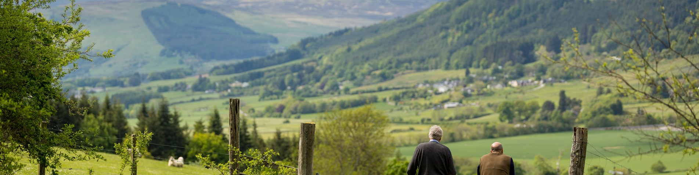

{% extends "layout.html" %}
{% block content %}

<div style="background-color:#c1f0c1" class="jumbotron">


<center>
        <div class="intro_text">
                <h1>Error, The page you have requested is not found.</h1><br>
                        <button onclick="goBack()" type="button" class="btn btn-primary">
  				Previous Page
			</button>

        </div>
</center>


</div>

<script>
	function goBack(){
		window.history.back();
}
</script>

{% endblock %}
~
~

